1사업을 열고 「자문위원」 메뉴로 갑니다
왼쪽 위 작업할 사업에서 「부기 시범 사용 자문」을 고른 뒤, 왼쪽 메뉴 사업 운영 아래 자문위원을 누릅니다.
위쪽 숫자 네 칸에 접수한 사람, 서류를 다 낸 사람, 바로 입금할 수 있는 사람, 실지급 합계가 나옵니다.
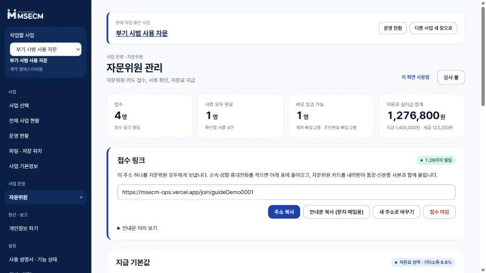
MSECM 업무자동화 시스템 사용 안내
자문위원 카드, 통장 사본, 신분증 사본을 링크 하나로 받고, 서류가 다 들어온 사람만 골라 지급 엑셀을 내려받는 순서입니다. 화면 그림은 눌러서 크게 볼 수 있습니다.
MSECM 계정으로 로그인한 컴퓨터에서 합니다. 주소는 msecm-ops.vercel.app 입니다.
왼쪽 위 작업할 사업에서 「부기 시범 사용 자문」을 고른 뒤, 왼쪽 메뉴 사업 운영 아래 자문위원을 누릅니다.
위쪽 숫자 네 칸에 접수한 사람, 서류를 다 낸 사람, 바로 입금할 수 있는 사람, 실지급 합계가 나옵니다.

지급 기본값의 1인 기본 금액에 자문료를 적고, 세금은 기타소득 8.8%로 둔 채 기본값 저장 · 모두에게 적용을 누릅니다.
이미 접수한 사람과 앞으로 접수할 사람 모두 이 금액을 받습니다. 금액이 다른 사람만 5번에서 따로 바꿉니다.
금액을 넣지 않으면 표에 「금액 0원」이 뜨고, 그 사람은 지급 엑셀에 들어가지 않습니다.
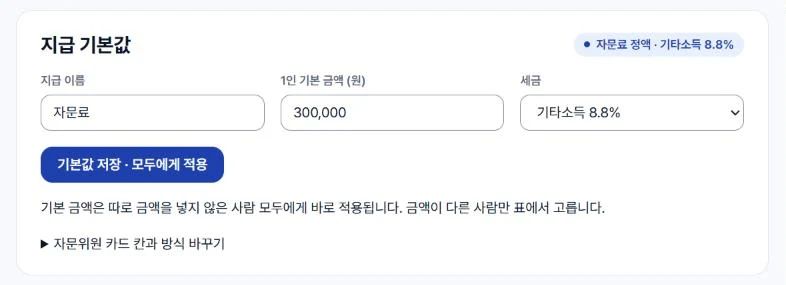
안내문 복사 (문자·메일용)를 누르면 링크와 제출 순서가 담긴 글이 복사됩니다. 문자, 메일, 단체 대화방에 그대로 붙여 넣습니다. 주소만 필요하면 주소 복사를 누릅니다.
링크 하나를 모두에게 같이 보내면 됩니다. 받은 사람이 소속, 성함, 휴대전화를 적는 순간 아래 표에 한 줄이 생깁니다.
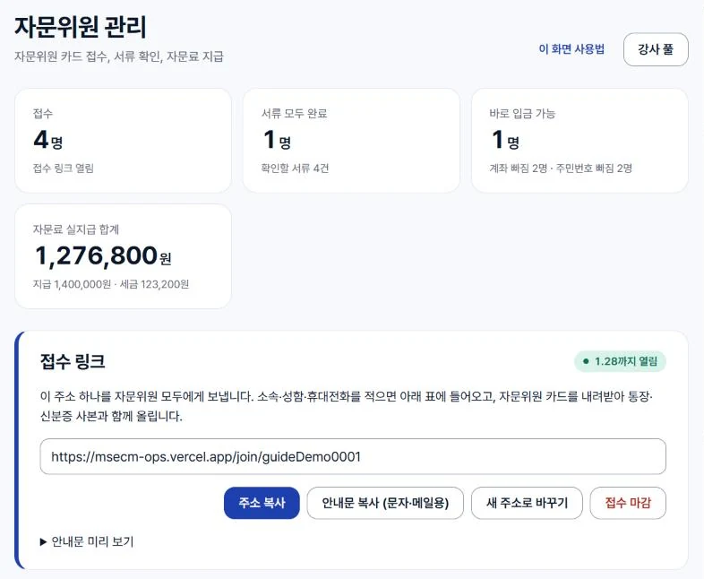
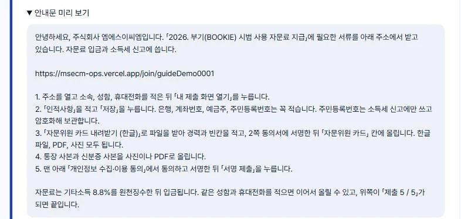
사람마다 서류 다섯 칸(인적사항, 카드, 동의, 통장, 신분증)이 색으로 보입니다.
노란 칸을 열어 보고 이상이 없으면 제출된 서류 확인 완료를 누릅니다. 왼쪽 네모로 사람을 골랐으면 그 사람만, 아무도 고르지 않았으면 모두의 노란 칸이 한꺼번에 초록으로 바뀝니다.
카드에 서명이 빠졌거나 통장 사진이 흐리면 확인 완료를 누르지 말고, 본인에게 다시 올려 달라고 연락합니다. 다시 올리면 그 칸이 다시 노랗게 됩니다.
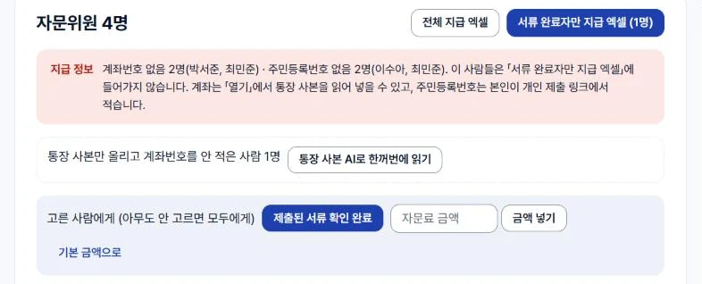
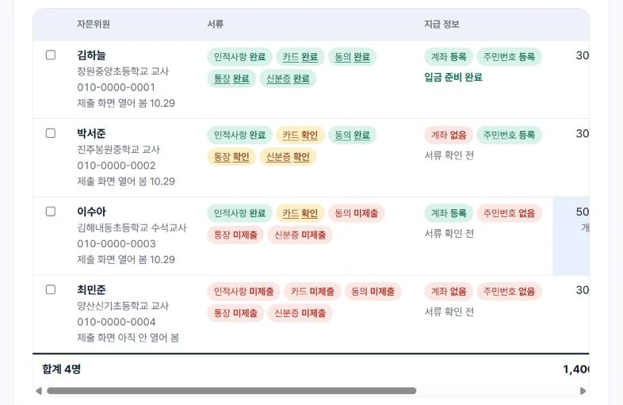
표의 「지급 정보」 칸에 계좌와 주민번호가 들어왔는지 나옵니다. 둘 다 등록이고 서류 다섯 칸이 초록이면 입금 준비 완료가 됩니다. 빠진 사람은 표 위 빨간 안내에 이름이 나옵니다.
금액이 다른 사람은 열기의 「개별 자문료」에 금액을 적고 금액 저장을 누릅니다. 여러 명이면 표에서 골라 위쪽 칸에 금액을 적고 금액 넣기를 누릅니다.
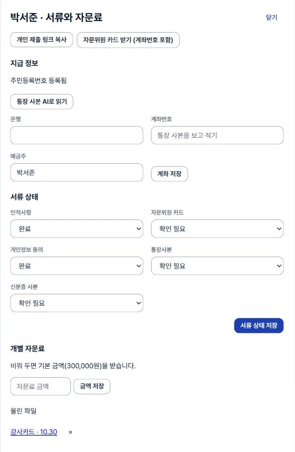
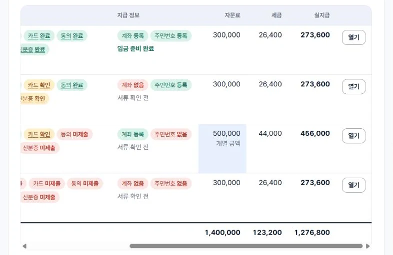
표 위 서류 완료자만 지급 엑셀 (n명)을 누릅니다. 괄호 안 숫자가 「입금 준비 완료」인 사람 수이고, 그 사람들만 엑셀에 들어갑니다.
| 지급표 | 이름, 자문료, 세금, 실지급액 |
|---|---|
| 원천징수 | 이름, 주민등록번호, 지급액, 소득세, 지방소득세. 원천세 신고에 씁니다. |
| 계좌이체 | 이름, 은행, 계좌번호, 예금주, 이체 금액. 은행 대량이체에 올립니다. |
| 빠진 사람 | 엑셀에서 빠진 사람과 이유(서류 확인 전, 계좌번호 없음 같은 것) |
모두를 한 번에 보고 싶으면 전체 지급 엑셀을 씁니다. 이 파일에는 서류가 덜 된 사람도 들어가니 입금용으로는 쓰지 않습니다.
엑셀에 주민등록번호와 계좌번호가 들어 있습니다. 내려받을 때마다 누가 받았는지 시스템에 남습니다. 신고와 이체를 마치면 컴퓨터에서 지우고, 메일이나 공유 드라이브에 올리지 않습니다.
링크를 받은 선생님이 휴대폰이나 컴퓨터에서 보는 화면입니다. 이 부분 주소(끝에 #teacher)만 따로 보내도 됩니다.
소속, 성함, 휴대전화를 적고 내 제출 화면 열기를 누르면 그 선생님만의 제출 화면이 열립니다.
나중에 이어서 올릴 때도 같은 링크에 같은 성함과 휴대전화를 적으면 같은 화면으로 돌아옵니다. 새로 접수되지 않습니다.
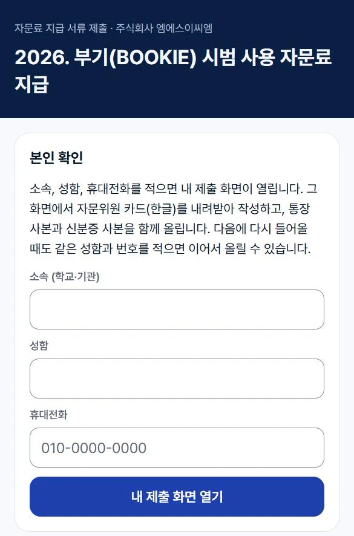
맨 위 「제출 0 / 5」가 다섯 가지 서류 중 몇 가지를 냈는지 보여 줍니다.
인적사항에서 은행, 계좌번호, 예금주, 주민등록번호에는 「(필수)」가 붙어 있고, 비우면 저장되지 않습니다. 주민등록번호는 소득세 신고에만 쓰고 암호화해 보관합니다.
잘못 적었으면 고쳐 적고 다시 저장을 누르면 바뀝니다.
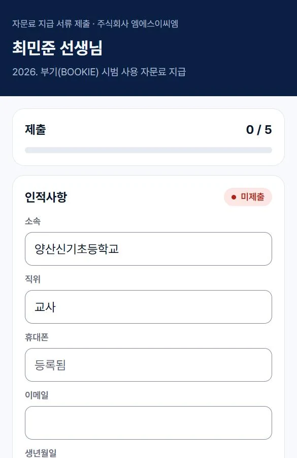
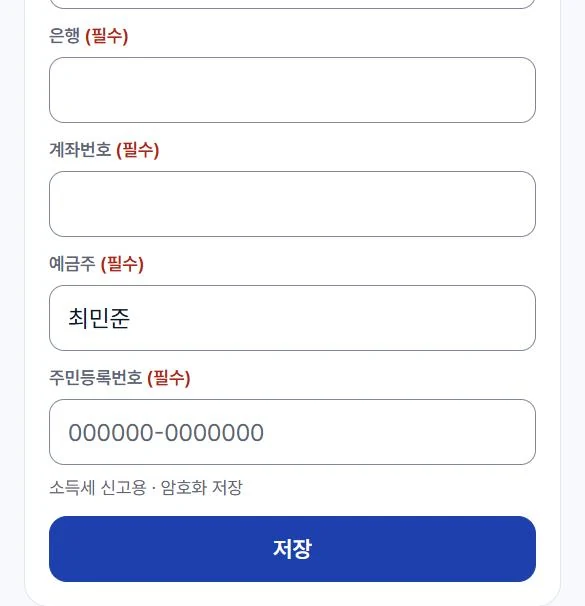
자문위원 카드 내려받기 (한글)를 누르면 인적사항이 채워진 한글 파일이 내려옵니다. 인적사항을 먼저 저장해야 내용이 채워집니다.
1쪽에 학력과 경력을 적고, 2쪽 개인정보 수집·이용 동의서에 표시하고 서명합니다. 그 파일을 파일 선택으로 고른 뒤 올리기를 누릅니다. 한글 파일, PDF, 종이에 써서 찍은 사진 모두 됩니다.
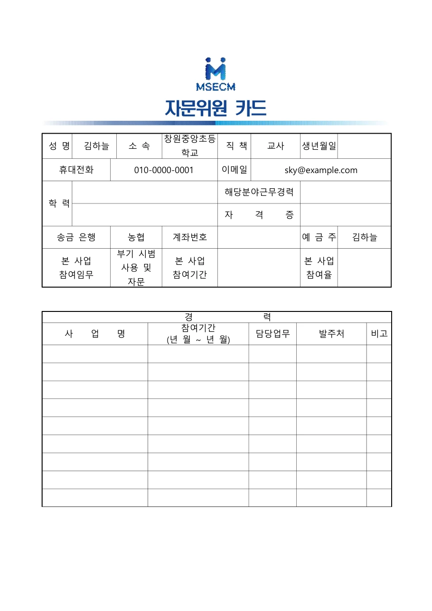
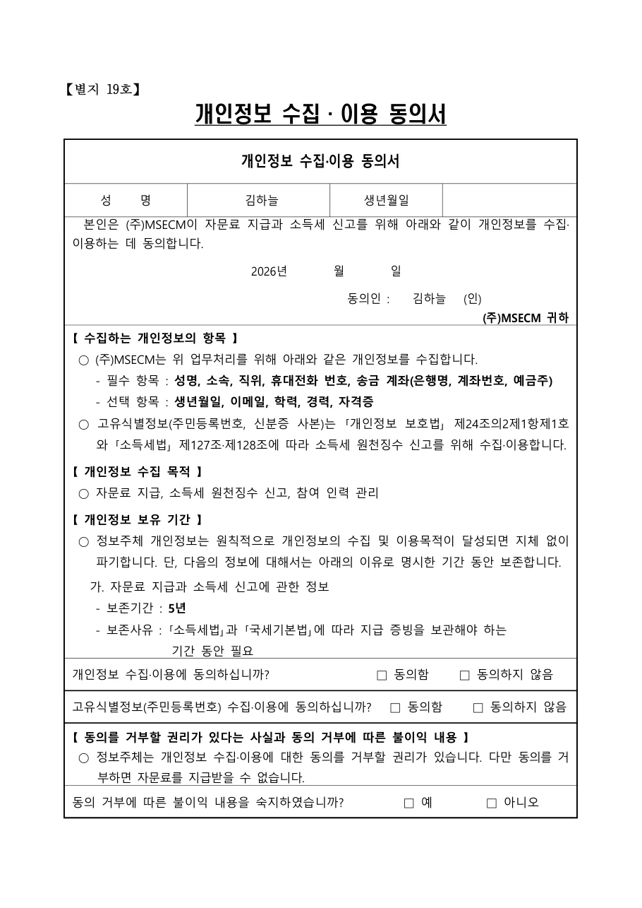
휴대폰으로 찍은 사진이나 PDF를 각 칸에서 골라 올리기를 누릅니다. 파일 하나는 10MB까지 됩니다.
통장 사본은 은행, 계좌번호, 예금주가 다 보이게 찍습니다.
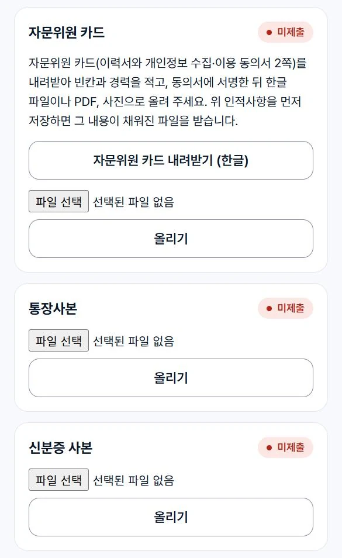
필수항목에 「동의함」, 선택항목은 고르고, 고유식별정보 확인에 표시한 뒤 네모 칸에 손가락이나 마우스로 서명합니다. 서명 제출을 누르면 끝납니다.
필수항목에 동의하지 않으면 제출되지 않습니다.
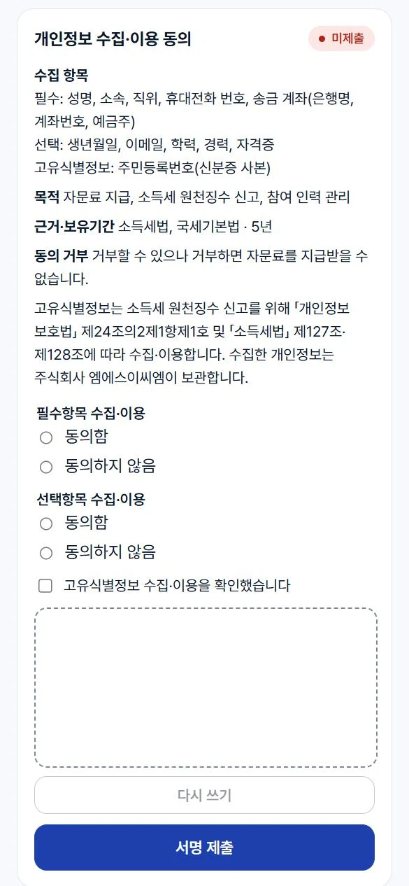
다섯 가지를 다 내면 위쪽 막대가 다 찹니다. 담당자가 확인을 마치면 각 칸이 「완료」로 바뀝니다.
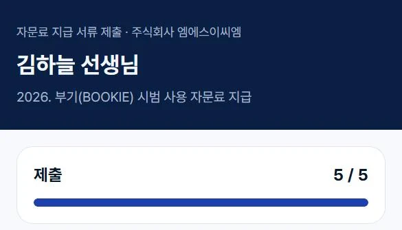
처음 보낸 접수 링크에 같은 성함과 휴대전화를 다시 적으면 됩니다. 담당자 화면에서 그 사람 줄의 「열기」, 「개인 제출 링크 복사」로 개인 주소를 보내 줄 수도 있습니다.
휴대전화 번호를 다르게 적으면 다른 사람으로 들어옵니다. 서류가 빈 줄은 「강사 풀」에서 지웁니다.
본인이 제출 화면에서 고쳐 적고 저장하면 바뀝니다. 담당자가 「열기」에서 계좌번호를 고쳐 「계좌 저장」을 눌러도 됩니다.
사진이 흐리거나 비스듬하면 숫자를 잘못 읽을 수 있습니다. 넣기 전에 통장 사진과 한 자리씩 맞춰 보고, 다르면 직접 적어 「계좌 저장」을 누릅니다.
시스템 저장소에만 있고 구글 드라이브로 옮겨지지 않습니다. 표의 서류 칸을 누르면 열립니다. 사업이 끝나면 「개인정보 파기」 메뉴에서 정리합니다.